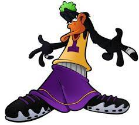
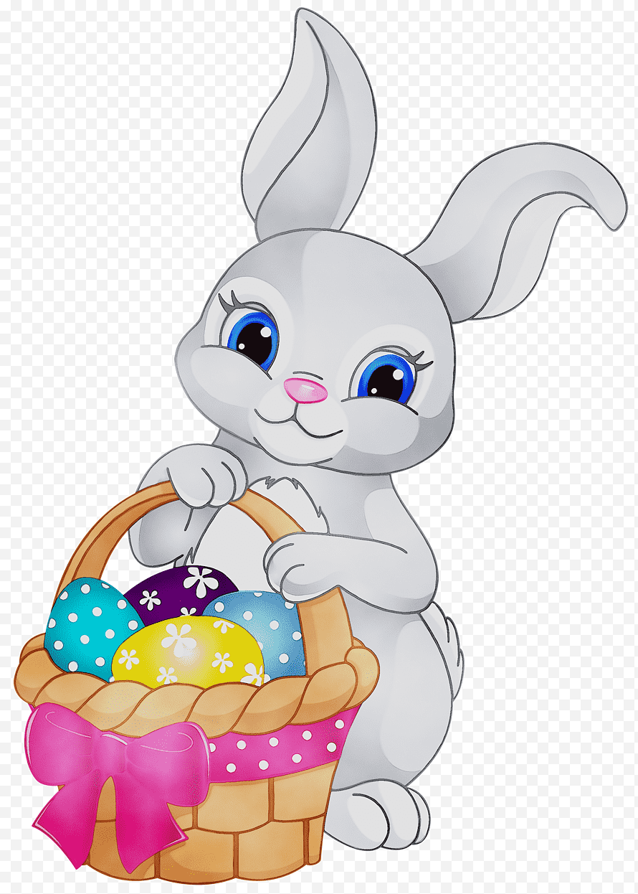

Como crear una página HTML: Tutorial para dummies
Esta página HTML es un ejemplo muy simple para que entiendas qué es el HTML y cómo se usa para crear páginas web.
¿Qué aprenderás en el tutorial?
En este tutorial aprenderás a:
- Crear documentos estructurados con etiquetas.
- Elegir el mejor editor para tu caso concreto.
- Crear la estructura básica de tu página HTML.
- Crear el contenido y aplicarle formato con las etiquetas HTML.
- Y mucho más.
Más información
El articulo completo lo puedes encontrar en.este.post del blog de Ciudadano 2.0
- bugs bunny.

- Pato Lucas.

- Puerco Porky.
- Piolín
- Elmer Gruñón.

- El gato Silvestre
- Tasmanian Devil.

- Easter Bunny. Conejo de Pascua

- Thumper conejo
- Gabriel Infante 16